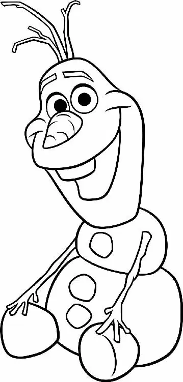

Summer returned to Arendelle, and the waters in the fjord were full of boats moving cargo and people.
Hans sat locked in a cage on the deck of a ship preparing to return to the Southern Isles.
“I’ll return this scoundrel to his country,” a dignitary told the royal handler. “We shall see what his twelve brothers think of his behavior!”
Nearby, Arendelle soldiers were leading the Duke and his two guards to their ship.
“This is unacceptable,” the Duke protested. “I am innocent! I’m a victim of fear. I demand to see the queen!”
“Oh, right,” the royal handler told him. “I have a message from the queen: ‘Arendelle will henceforth and forever no longer do business of any sort with Weaseltown.’”
“Weselton!” shouted the Duke. “It’s Weselton!”
In the village, Anna hurried through the streets, pulling a blindfolded Kristoff behind her. “Come on, come on,” she called to him.
Anna led Kristoff straight into people and almost slammed him into a pole. “You’re not a very good blindfold guide,” he told her. Finally, they stopped.
“Here we are!” Anna said. She pulled off Kristoff’s blindfold. Before them sat a beautiful new sled. “I owe you a sled!”
Kristoff was taken aback. “Are you serious?” he said. “No. I can’t accept this.”
Anna laughed. “You have to. No returns. Queen’s orders. She’s named you the official Arendelle ice master and deliverer.”
“That’s not a thing,” said Kristoff with a smile. “Sure it is!” Anna said. “And it even has a cup holder. Do you like it?”
Kristoff hugged Anna. “Like it?” he asked. “I love it. I could kiss you!” Kristoff looked into Anna’s eyes and suddenly felt bashful . “I mean, I’d like to. May I? I mean, may we? Wait — what?”
Anna leaned over and gave Kristoff a quick kiss. “We may,” she said.
Kristoff smiled. Then he leaned in and kissed Anna right back. But this time it was a real kiss, sweet and romantic, and perfect for Anna.
Not far away, Olaf was happily enjoying the summer weather with the help of his little snow cloud. He held a big bouquet of flowers up to his nose and took a deep sniff. Suddenly, he sneezed — and his carrot nose shot off his face!
Sven was standing nearby, and with a quick movement of his head, the reindeer reached out and caught the carrot in his mouth. For a moment, it looked like Sven might chomp down on his favorite food. But instead, he gave the carrot back to Olaf, who happily popped the carrot back onto his face.
Just past Olaf, Anna saw something else that brought a smile to her face. The gates to the castle were wide open. Elsa stood in the courtyard. All around her, people were putting on ice skates. And the parts of the castle that had been destroyed earlier were now fully repaired — with ice!
“Are you ready?” Elsa was asking the crowd. She raised her arms, swirled them in the air, and created a beautiful ice rink!
Anna ran to her sister. “The gates are open,” she said. “I like it.”
Elsa put an arm around Anna. “Let’s never close them again.” Then, with a smile, she pulled Anna onto the ice so the two could skate around the rink, together at last.
Behind them, Sven ventured out onto the ice, too. But his skating didn’t come so easily. His legs slipped and twisted as he struggled to keep his balance. Anxious for his friend, Kristoff chased after Sven, awkwardly trying to keep him upright.
Last came Olaf, who slid over to Anna and Elsa. Together, they all skated happily across the ice. Summer — as well as love and happiness — had finally returned to Arendelle.
